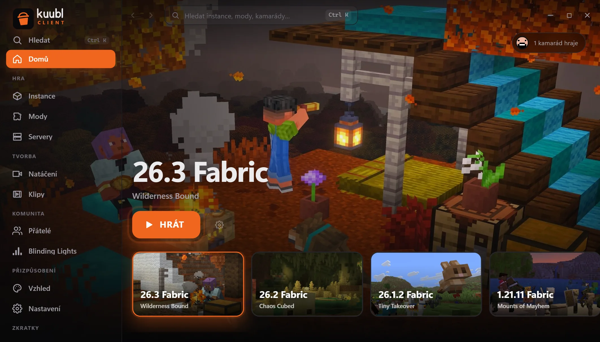
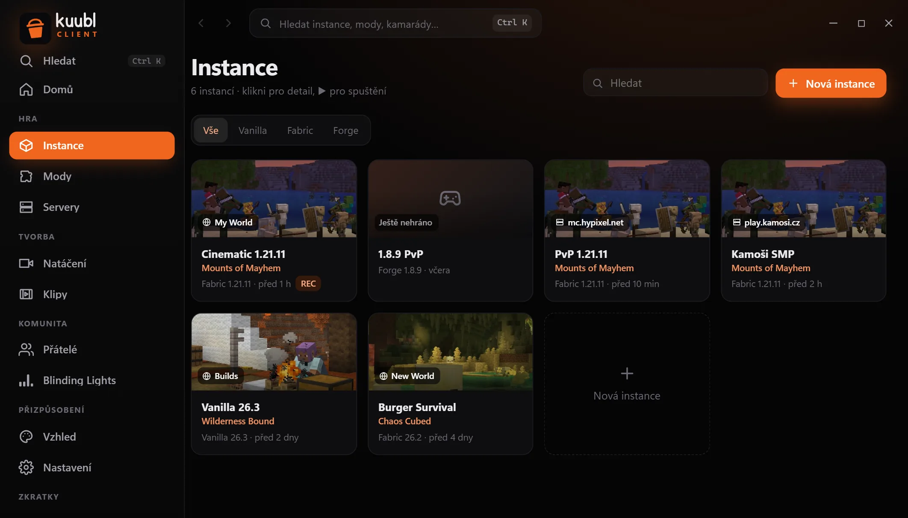
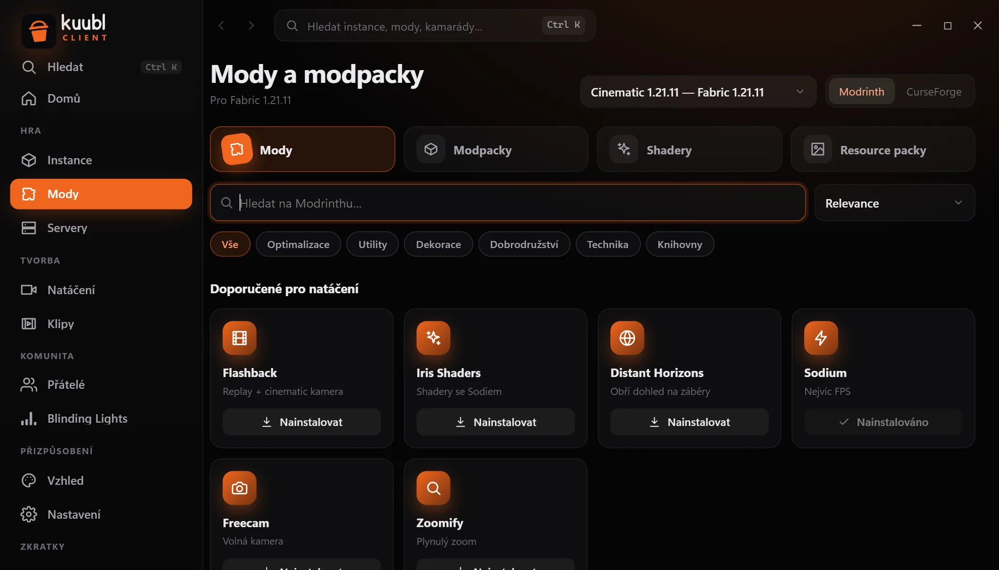
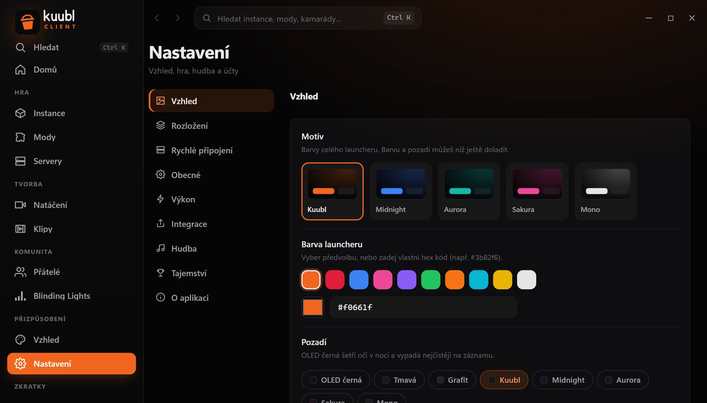
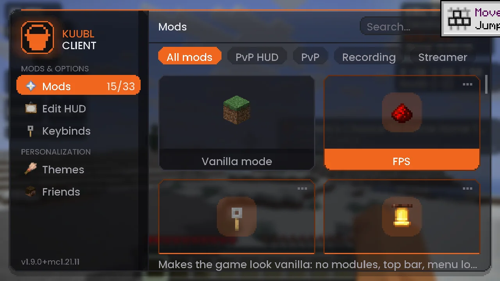
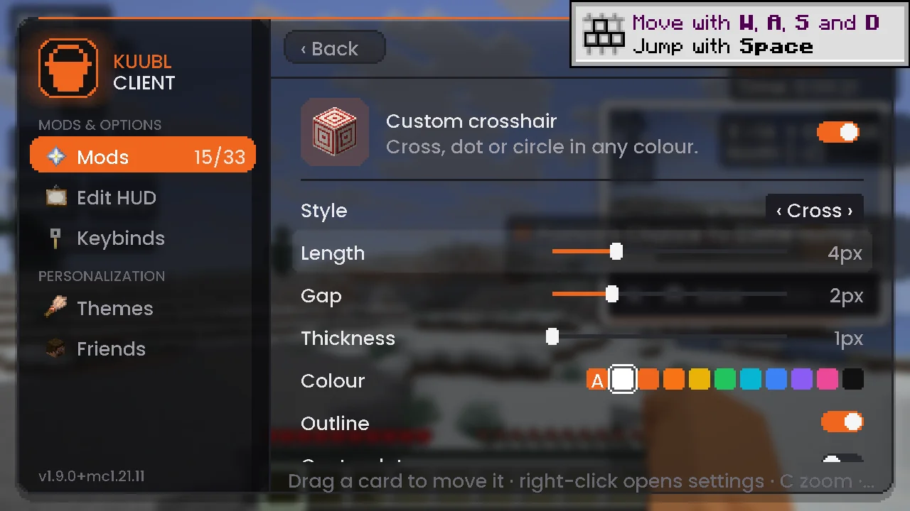
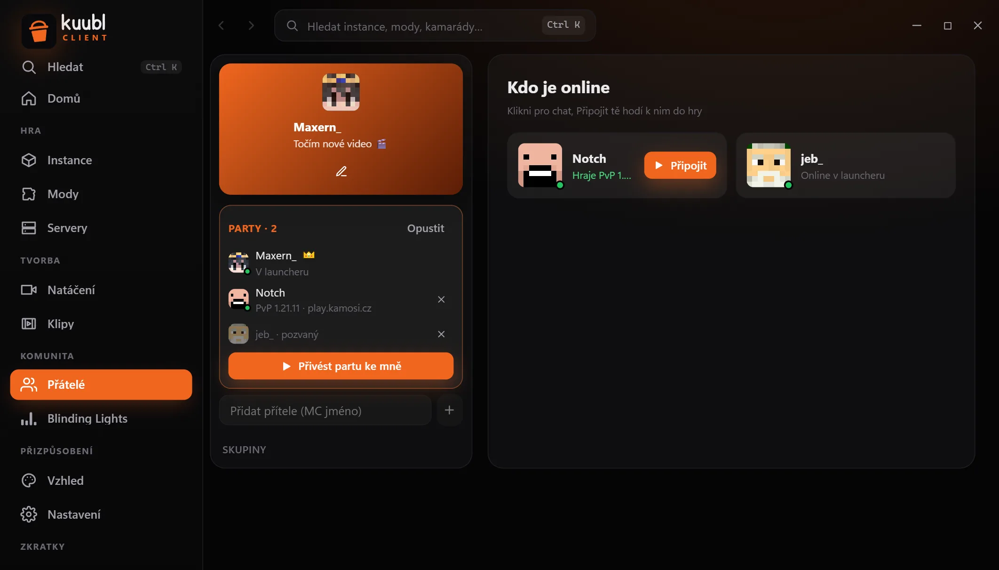
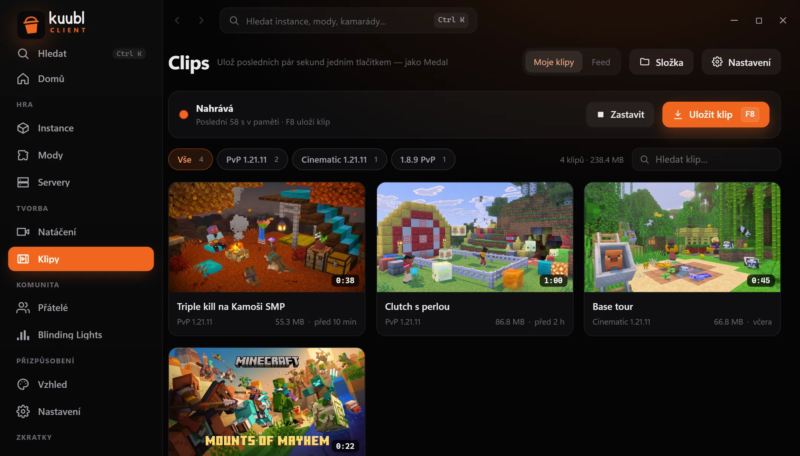
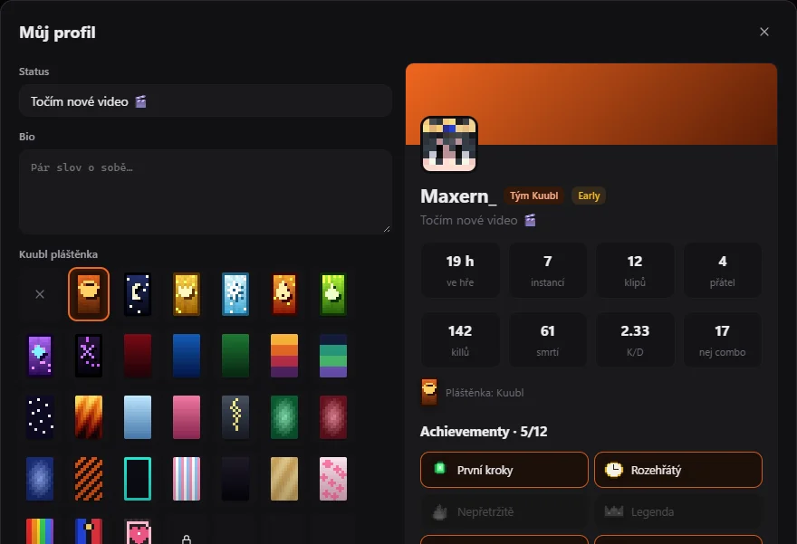

Minecraft launcher, který hraje s tebou.
The Minecraft launcher that plays with you.
Instance, mody, kamarádi, hudba a klipy v jednom. Zdarma a bez reklam.
Instances, mods, friends, music and clips in one place. Free, no ads.

Každá hra ve vlastní instanci.
Every game in its own instance.
Vanilla, Fabric, Quilt, Forge i NeoForge vedle sebe. Karta ukáže svět nebo server, kde jsi hrál naposledy.
Vanilla, Fabric, Quilt, Forge and NeoForge side by side. Each card shows the world or server you last played on.



- Modrinth a CurseForge v jednom
- Modrinth and CurseForge in one
- Hledání a závislosti, které se stáhnou samy.
- Search, and dependencies that download themselves.
- Hotové balíčky
- Ready-made packs
- Cinematic, SMP, PvP a PvP 1.8.9, se Simple Voice Chatem.
- Cinematic, SMP, PvP and PvP 1.8.9, with Simple Voice Chat.
- Chytré nastavení
- Smart setup
- RAM a Java se nastaví samy, pády launcher rozebere.
- RAM and Java set themselves, crashes get analysed.
- Režim natáčení
- Recording mode
- Flashback, čisté nastavení pro záběry a OBS, které začne nahrávat samo.
- Flashback, clean settings for footage and OBS that starts by itself.
Dobré mody jsou tam od začátku.
Good mods are there from the start.
Nová instance dostane balíček optimalizací a Kuubl Mod. Co nechceš, vypneš. Vlastní mody přetáhneš do okna.
A new instance gets the optimization pack and Kuubl Mod. Turn off what you don’t want. Drag in your own mods.
- Sodium
- Lithium
- Entity Culling
- ImmediatelyFast
- Iris Shaders
- FerriteCore
- ModernFix
- Dynamic FPS
- Flashback
- Distant Horizons
- Zoomify
- Simple Voice Chat
- Xaero’s Minimap
- AppleSkin
- Continuity
- Jade
- Mod Menu
- Kuubl Mod
- Přenes si modpack
- Bring your modpack
- Import
.mrpack, CurseForge zip i.dawnpack. - Import
.mrpack, CurseForge zip and.dawnpack. - Oprava jedním klikem
- One-click repair
- Duplicity, chybějící závislosti a konflikty verzí, s náhledem a vrácením.
- Duplicates, missing dependencies and version conflicts, with preview and undo.
- Stahování na pozadí
- Background downloads
- Fronta s pauzou a zrušením, launcher mezitím používáš dál.
- A queue with pause and cancel while you keep using the launcher.
Vlastní menu přímo ve hře.
Your own menu, right in the game.
Zmáčkni Pravý Shift a zapni, co potřebuješ. HUD rozložíš myší, uložíš jako preset a obarvíš motivem.
Press Right Shift and switch on what you need. Drag the HUD around, save it as a preset and colour it with a theme.
- FPS
- CPS
- Ping
- Keystrokes
- SouřadniceCoordinates
- BrněníArmor
- EfektyEffects
- Zoom
- Freelook
- ZaměřovačCrosshair
- Čisté HUDClean HUD
- Čas a počasíTime and weather
- Vanilla módVanilla mode
- Now Playing
Minecraft 1.21.10, 1.21.11 a 26.1 až 26.3 na Fabricu, NeoForge i Forge. Launcher ho přidá sám a jedním přepínačem ho vypneš.
Minecraft 1.21.10, 1.21.11 and 26.1 to 26.3 on Fabric, NeoForge and Forge. The launcher adds it for you, one switch turns it off.



Hraj s kámoši bez serveru.
Play with friends, no server needed.
Přidej si kamarády podle jména, piš si s nimi a pozvi je do svého světa jedním klikem.
Add friends by name, chat with them and invite them into your world with one click.
- tyyouotevřeš světopen your world
- Kuubl relayšifrované spojeníencrypted link
- kamarádfriendklikne Připojitclicks Join
- Chat v launcheru, v menu i ve hře na klávese U.
- Chat in the launcher, on the title screen and in game on U.
- Žádné porty ani hosting, svět běží u tebe.
- No ports, no hosting, the world runs on your PC.
- Klipy a modpacky pošleš přímo do chatu.
- Send clips and modpacks straight into the chat.
Ten moment už neuteče.
Never miss that moment again.
Launcher drží v paměti posledních až 5 minut hry. Stane se něco epického, zmáčkneš F8 a klip je na disku.
The launcher keeps up to the last 5 minutes of play in memory. Something epic happens, you press F8 and the clip is on disk.
- Kóduje grafická karta: NVENC na Windows, gpu-screen-recorder na Linuxu.
- The graphics card encodes: NVENC on Windows, gpu-screen-recorder on Linux.
- Hra a mikrofon na samostatných stopách.
- Game and mic on separate tracks.


A pár věcí navíc.
And a few extras.
- 28 plášťů a knihovna skinů
- 28 capes and a skin library
- Plášť uvidí ostatní hráči Kuublu kolem tebe. Skiny přepínáš jedním klikem, i na offline účtu.
- Other Kuubl players around you see your cape. Switch skins in one click, offline accounts too.
- Hudba bez odcházení ze hry
- Music without leaving the game
- Přehrávač ukáže, co hraje ve Spotify nebo prohlížeči. Ve hře End pauza, Page Down a Page Up přeskočí.
- The player shows what’s on in Spotify or a browser. In game End pauses, Page Down and Page Up skip.
- Samo se aktualizuje
- Updates itself
- Podepsané aktualizace jedním klikem, zálohy a snapshoty světů.
- Signed one-click updates, backups and world snapshots.
- 8 tajemství
- 8 secrets
- V launcheru je schovaných osm easter eggů. Hodně štěstí.
- Eight easter eggs are hidden in the launcher. Good luck.
Stáhni si Kuubl Client.
Get Kuubl Client.
Zdarma. Aktualizace pak chodí samy přímo v launcheru.
Free. Updates then arrive by themselves inside the launcher.
-
Windows 10 / 11Instalačka, 64 bitInstaller, 64-bitKuublClient-setup.exe
-
Linux .debUbuntu, Linux Mint, Debian, Pop!_OSkuubl-client.deb
sudo apt install ./kuubl-client.deb -
Arch LinuxArch, CachyOS, EndeavourOS, Manjarokuubl-client.pkg.tar.zst
sudo pacman -U kuubl-client.pkg.tar.zst -
AppImageJakékoliv distro, nic se neinstalujeAny distro, nothing to installKuublClient.AppImage
chmod +x KuublClient.AppImage
Windows ukáže modré varování? Tady je proč a co s tím.Windows shows a blue warning? Here’s why and what to do.
Kuubl Client zatím nemá placený certifikát pro podpis kódu, takže ho SmartScreen nezná. Každá aktualizace je ale podepsaná naším klíčem a launcher jinou verzi nepřijme.
Kuubl Client doesn’t have a paid code-signing certificate yet, so SmartScreen doesn’t know it. Every update is signed with our key though, and the launcher rejects anything else.
- Po spuštění instalačky klikni na Další informace.
- After starting the installer, click More info.
- Objeví se tlačítko Přesto spustit, klikni na něj.
- A Run anyway button appears, click it.
- Blokuje stažení prohlížeč? Otevři stahování (Ctrl+J) a u souboru zvol Ponechat.
- Browser blocks the download? Open downloads (Ctrl+J) and choose Keep on the file.
Časté otázky.
Common questions.
Je Kuubl Client zdarma?Is Kuubl Client free?
Ano. Launcher i Kuubl Mod jsou zdarma a bez reklam.
Yes. The launcher and Kuubl Mod are free and ad-free.
Potřebuju koupený Minecraft?Do I need to own Minecraft?
Na online servery ano: přihlásíš se účtem Microsoft přímo u Microsoftu, launcher tvoje heslo nikdy nevidí. Bez koupené hry si přidáš offline účet pro singleplayer, LAN, sdílené světy a servery bez ověření. Kamarádi a chat fungují i s ním.
For online servers, yes: you sign in with Microsoft directly, the launcher never sees your password. Without owning the game you can add an offline account for singleplayer, LAN, shared worlds and servers without authentication. Friends and chat work with it too.
Je to bezpečné?Is it safe?
Každá aktualizace je podepsaná naším klíčem a launcher jinou verzi nepřijme. Proč Windows ukáže varování, najdeš u stažení.
Every update is signed with our key and the launcher rejects anything else. Why Windows shows a warning is explained under Download.
Můžu s ním hrát na jakémkoliv serveru?Can I play on any server with it?
Ano. Kuubl Mod obsahuje jen HUD a vizuální věci, žádné cheaty. Pravidla konkrétního serveru ale dodržuj.
Yes. Kuubl Mod only has HUD and visual features, no cheats. Still follow the rules of the server you play on.
Jak funguje sdílení světa? Musím otevírat porty?How does world sharing work? Do I need to open ports?
Nemusíš. Svět běží u tebe, Kuubl Mod ho otevře a launcher ho přes naši relay přepošle pozvaným kamarádům. Stačí, aby všichni měli Kuubl Client.
No. The world runs on your PC, Kuubl Mod opens it and the launcher forwards it through our relay to invited friends. Everyone just needs Kuubl Client.
Funguje to na Linuxu nebo Macu?Does it work on Linux or Mac?
Na Linuxu ano: balíček .deb, balíček pro Arch a AppImage pro jakékoliv distro. Mac zatím podporovaný není.
On Linux, yes: a .deb, an Arch package and an AppImage for any distro. Mac isn’t supported yet.